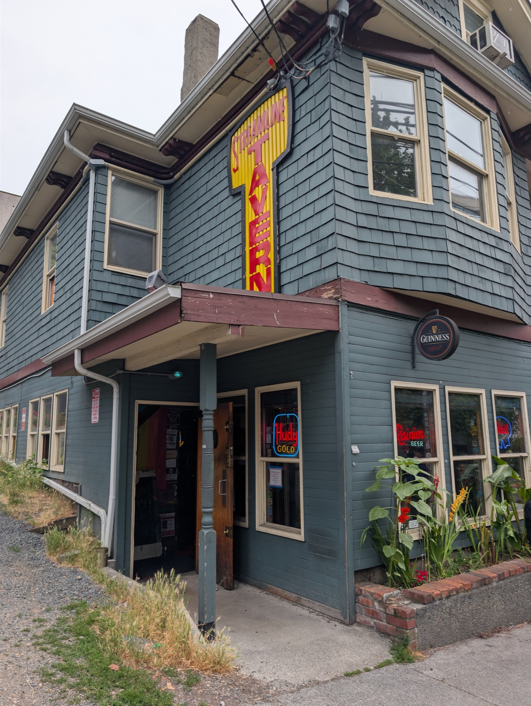
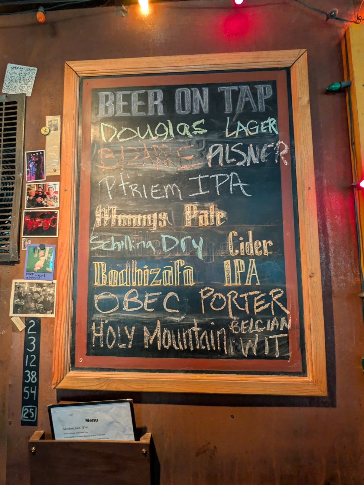

Wing Mondays
Start the week with a basket of wings.
Lower Queen Anne's friendly neighborhood dive.
Poured by the friendliest, most one-of-a-kind bartenders around.
Rotating specialty food nights — arrive hungry.
Start the week with a basket of wings.
Dogs on the griddle, drinks in hand.
Tacos and the taco salad regulars swear by.
Little burgers, big Sunday energy.
Pool · Pinball · Chess · Jenga and more — always free to play.
For decades the Streamline has been Lower Queen Anne's living room — a dark, warm, gloriously cluttered dive where everybody's welcome.
Tucked inside an unassuming old Craftsman a stone's throw from Seattle Center and Climate Pledge Arena, it's been a neighborhood institution for years and has held down 174 Roy St since 2015. The walls are papered in chalk, photos, band flyers and years of regulars' handwriting. The beer is cold and the pours are honest.
It's quirky, a little punk, and it feels like home. Everybody's welcome here, exactly as you are — every name, every pronoun. And it's seriously dog-friendly: well-behaved pups are regulars too, with a water bowl by the door, a scratch behind the ears, and the run of the place right alongside you.


174 Roy St
Seattle, WA 98109
Lower Queen Anne / Uptown